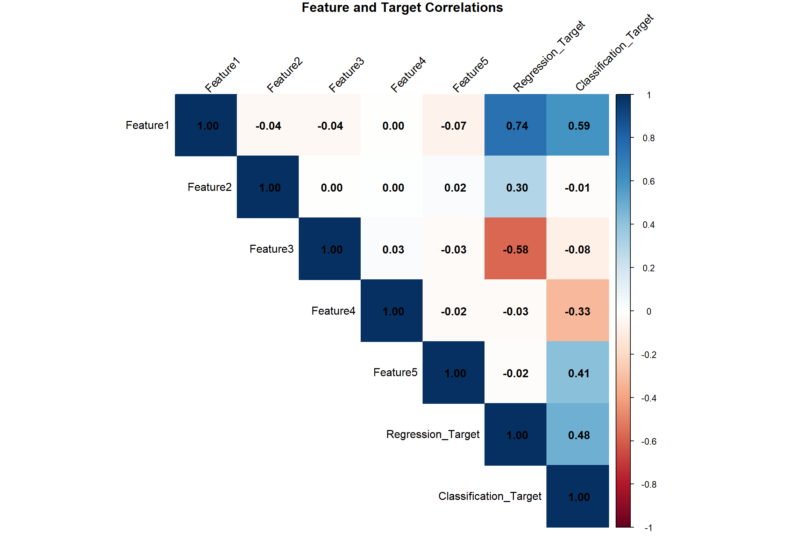
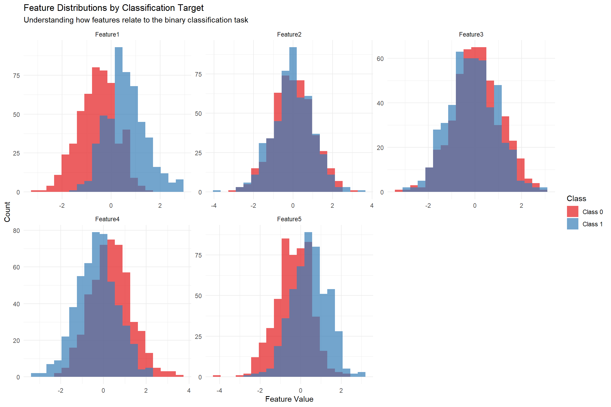
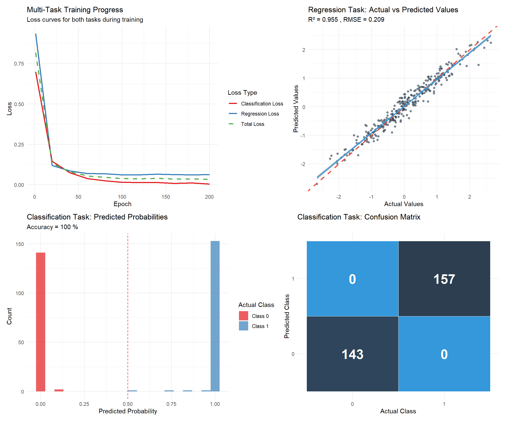
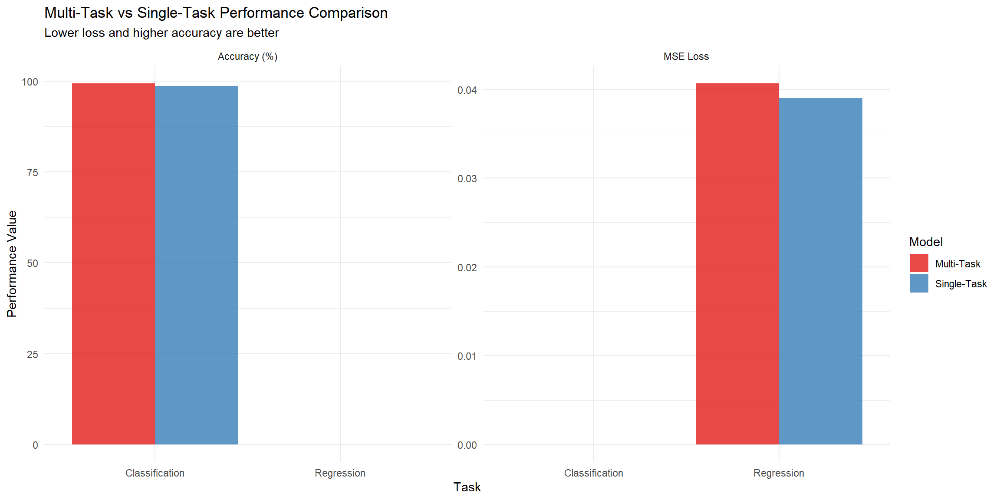

# install.packages(c("torch", "tidyverse", "corrplot"))
library(torch)
library(tidyverse)Multi-Task Learning with torch in R
R
Deep Learning
torch
Multi-Task Learning
Multi-task learning (MTL) is an approach where a single neural network model is trained to perform multiple related tasks simultaneously. This approach can improve model generalization, reduce overfitting, and leverage shared information across tasks. In this post, we’ll implement a multi-task learning model using the torch package in R.
Introduction to Multi-Task Learning
Multi-task learning works by sharing representations between related tasks, allowing the model to generalize better. Instead of training separate models for each task, we train a single model with:
- Shared layers that learn common features across tasks
- Task-specific layers that specialize for each individual task
- Multiple loss functions, one for each task
This approach is particularly useful when you have related prediction problems that can benefit from shared feature representations.
Installation and Setup
First, let’s install and load the required packages:
Creating a Multi-Task Learning Model
We’ll build a model that simultaneously performs two related tasks: 1. Regression: Predicting a continuous value 2. Classification: Predicting a binary outcome
1. Generate Sample Data for Multiple Tasks
Let’s create a synthetic dataset that contains features relevant to both tasks:
# Set seed for reproducibility
set.seed(123)
# Number of samples
n <- 1000
# Create a dataset with 5 features
x <- torch_randn(n, 5)
# Task 1 (Regression): Predict continuous value
# Create a target that's a function of the input features plus some noise
y_regression <- x[, 1] * 0.7 + x[, 2] * 0.3 - x[, 3] * 0.5 + torch_randn(n) * 0.2
# Task 2 (Classification): Predict binary outcome
# Create a classification target based on a nonlinear combination of features
logits <- x[, 1] * 0.8 - x[, 4] * 0.4 + x[, 5] * 0.6
y_classification <- (logits > 0)$to(torch_float())
# Display data summary
cat("Dataset created with", n, "samples and 5 features\n")Dataset created with 1000 samples and 5 featurescat("Regression target range:", round(as.numeric(y_regression$min()), 3), "to", round(as.numeric(y_regression$max()), 3), "\n")Regression target range: -2.809 to 2.641 cat("Classification target distribution:",
round(as.numeric(y_classification$mean()), 3), "positive class ratio\n")Classification target distribution: 0.5 positive class ratio# Split into training (70%) and testing (30%) sets
train_idx <- 1:round(0.7 * n)
test_idx <- (round(0.7 * n) + 1):n
# Training data
x_train <- x[train_idx, ]
y_reg_train <- y_regression[train_idx]
y_cls_train <- y_classification[train_idx]
# Testing data
x_test <- x[test_idx, ]
y_reg_test <- y_regression[test_idx]
y_cls_test <- y_classification[test_idx]
cat("Training samples:", length(train_idx), "\n")Training samples: 700 cat("Testing samples:", length(test_idx), "\n")Testing samples: 300 2. Exploratory Data Analysis
Let’s examine the relationships between features and targets:
# Convert to R matrices for analysis
x_r <- as.matrix(x)
y_reg_r <- as.numeric(y_regression)
y_cls_r <- as.numeric(y_classification)
# Create a comprehensive dataset for analysis
analysis_df <- data.frame(
Feature1 = x_r[, 1],
Feature2 = x_r[, 2],
Feature3 = x_r[, 3],
Feature4 = x_r[, 4],
Feature5 = x_r[, 5],
Regression_Target = y_reg_r,
Classification_Target = y_cls_r
)
# Correlation analysis
cor_matrix <- cor(analysis_df)
corrplot(cor_matrix, method = "color", type = "upper",
tl.col = "black", tl.srt = 45, addCoef.col = "black",
title = "Feature and Target Correlations", mar = c(0,0,1,0))
# Visualize feature distributions by classification target
long_features <- analysis_df %>%
select(-Regression_Target) %>%
pivot_longer(cols = starts_with("Feature"),
names_to = "Feature", values_to = "Value") %>%
mutate(Class = factor(Classification_Target, labels = c("Class 0", "Class 1")))
ggplot(long_features, aes(x = Value, fill = Class)) +
geom_histogram(alpha = 0.7, bins = 20, position = "identity") +
facet_wrap(~Feature, scales = "free") +
labs(title = "Feature Distributions by Classification Target",
subtitle = "Understanding how features relate to the binary classification task",
x = "Feature Value", y = "Count") +
theme_minimal() +
scale_fill_brewer(palette = "Set1")
3. Define the Multi-Task Neural Network
Now we’ll create a neural network with shared layers and task-specific branches:
# Define the multi-task neural network
multi_task_net <- nn_module(
"MultiTaskNet",
initialize = function(input_size,
hidden_size,
reg_output_size = 1,
cls_output_size = 1) {
self$input_size <- input_size
self$hidden_size <- hidden_size
self$reg_output_size <- reg_output_size
self$cls_output_size <- cls_output_size
# Shared layers - these learn representations useful for both tasks
self$shared_layer1 <- nn_linear(input_size, hidden_size)
self$shared_layer2 <- nn_linear(hidden_size, hidden_size)
self$dropout <- nn_dropout(0.2) # Add regularization
# Task-specific layers
# Regression branch
self$regression_layer <- nn_linear(hidden_size, reg_output_size)
# Classification branch
self$classification_layer <- nn_linear(hidden_size, cls_output_size)
},
forward = function(x) {
# Shared feature extraction
shared_features <- x %>%
self$shared_layer1() %>%
nnf_relu() %>%
self$dropout() %>%
self$shared_layer2() %>%
nnf_relu() %>%
self$dropout()
# Task-specific predictions
regression_output <- self$regression_layer(shared_features)
classification_logits <- self$classification_layer(shared_features)
list(
regression = regression_output,
classification = classification_logits
)
}
)
# Create model instance
model <- multi_task_net(
input_size = 5,
hidden_size = 64
)
# Print model architecture
print(model)An `nn_module` containing 4,674 parameters.
── Modules ─────────────────────────────────────────────────────────────────────
• shared_layer1: <nn_linear> #384 parameters
• shared_layer2: <nn_linear> #4,160 parameters
• dropout: <nn_dropout> #0 parameters
• regression_layer: <nn_linear> #65 parameters
• classification_layer: <nn_linear> #65 parameters# Count parameters
total_params <- sum(sapply(model$parameters, function(p) prod(p$shape)))
cat("\nTotal parameters:", total_params, "\n")
Total parameters: 4674 4. Define Loss Functions and Optimizer
For multi-task learning, we need separate loss functions for each task:
# Loss functions
regression_loss_fn <- nnf_mse_loss # Mean squared error for regression
classification_loss_fn <- nnf_binary_cross_entropy_with_logits # Binary cross-entropy for classification
# Optimizer
optimizer <- optim_adam(model$parameters, lr = 0.01)
# Task weights - these control the relative importance of each task
task_weights <- c(regression = 0.5, classification = 0.5)
cat("Regression loss function: Mean Squared Error\n")Regression loss function: Mean Squared Errorcat("Classification loss function: Binary Cross-Entropy with Logits\n")Classification loss function: Binary Cross-Entropy with Logitscat("Optimizer: Adam with learning rate 0.01\n")Optimizer: Adam with learning rate 0.01cat("Task weights - Regression:", task_weights["regression"],
", Classification:", task_weights["classification"], "\n")Task weights - Regression: 0.5 , Classification: 0.5 5. Training Loop for Multi-Task Learning
We’ll train the model by combining the losses from both tasks:
# Hyperparameters
epochs <- 200
# Training history tracking
training_history <- data.frame(
epoch = integer(),
reg_loss = numeric(),
cls_loss = numeric(),
total_loss = numeric()
)
# Training loop
cat("Starting training...\n")Starting training...for (epoch in 1:epochs) {
model$train()
optimizer$zero_grad()
# Forward pass
outputs <- model(x_train)
# Calculate loss for each task
reg_loss <- regression_loss_fn(
outputs$regression$squeeze(),
y_reg_train
)
cls_loss <- classification_loss_fn(
outputs$classification$squeeze(),
y_cls_train
)
# Weighted combined loss
total_loss <- task_weights["regression"] * reg_loss +
task_weights["classification"] * cls_loss
# Backward pass and optimize
total_loss$backward()
optimizer$step()
# Record history (every 20 epochs)
if (epoch %% 20 == 0 || epoch == 1) {
training_history <- rbind(
training_history,
data.frame(
epoch = epoch,
reg_loss = as.numeric(reg_loss$item()),
cls_loss = as.numeric(cls_loss$item()),
total_loss = as.numeric(total_loss$item())
)
)
cat(sprintf("Epoch %d - Regression Loss: %.4f, Classification Loss: %.4f, Total Loss: %.4f\n",
epoch, reg_loss$item(), cls_loss$item(), total_loss$item()))
}
}Epoch 1 - Regression Loss: 0.9342, Classification Loss: 0.6992, Total Loss: 0.8167
Epoch 20 - Regression Loss: 0.1205, Classification Loss: 0.1459, Total Loss: 0.1332
Epoch 40 - Regression Loss: 0.0863, Classification Loss: 0.0745, Total Loss: 0.0804
Epoch 60 - Regression Loss: 0.0704, Classification Loss: 0.0392, Total Loss: 0.0548
Epoch 80 - Regression Loss: 0.0681, Classification Loss: 0.0252, Total Loss: 0.0466
Epoch 100 - Regression Loss: 0.0611, Classification Loss: 0.0160, Total Loss: 0.0385
Epoch 120 - Regression Loss: 0.0619, Classification Loss: 0.0138, Total Loss: 0.0379
Epoch 140 - Regression Loss: 0.0656, Classification Loss: 0.0140, Total Loss: 0.0398
Epoch 160 - Regression Loss: 0.0634, Classification Loss: 0.0092, Total Loss: 0.0363
Epoch 180 - Regression Loss: 0.0615, Classification Loss: 0.0113, Total Loss: 0.0364
Epoch 200 - Regression Loss: 0.0635, Classification Loss: 0.0045, Total Loss: 0.0340cat("Training completed!\n")Training completed!6. Model Evaluation
Let’s evaluate the model’s performance on both tasks:
# Set model to evaluation mode
model$eval()
# Make predictions on test set
with_no_grad({
outputs <- model(x_test)
# Regression evaluation
reg_preds <- outputs$regression$squeeze()
reg_test_loss <- regression_loss_fn(reg_preds, y_reg_test)
# Classification evaluation
cls_preds <- outputs$classification$squeeze()
cls_probs <- nnf_sigmoid(cls_preds)
cls_test_loss <- classification_loss_fn(cls_preds, y_cls_test)
# Convert predictions to binary (threshold = 0.5)
cls_pred_labels <- (cls_probs > 0.5)$to(torch_int())
# Calculate accuracy
accuracy <- (cls_pred_labels == y_cls_test$to(torch_int()))$sum()$item() / length(test_idx)
})
# Calculate additional metrics
reg_preds_r <- as.numeric(reg_preds)
y_reg_test_r <- as.numeric(y_reg_test)
cls_probs_r <- as.numeric(cls_probs)
y_cls_test_r <- as.numeric(y_cls_test)
# Regression metrics
rmse <- sqrt(mean((reg_preds_r - y_reg_test_r)^2))
mae <- mean(abs(reg_preds_r - y_reg_test_r))
r_squared <- cor(reg_preds_r, y_reg_test_r)^2
# Classification metrics
auc <- try({
if(require(pROC, quietly = TRUE)) {
pROC::auc(pROC::roc(y_cls_test_r, cls_probs_r, quiet = TRUE))
} else {
NA
}
}, silent = TRUE)
# Display results
performance_results <- data.frame(
Task = c("Regression", "Regression", "Regression", "Classification", "Classification"),
Metric = c("Test Loss (MSE)", "RMSE", "R-squared", "Test Loss (BCE)", "Accuracy"),
Value = c(
round(reg_test_loss$item(), 4),
round(rmse, 4),
round(r_squared, 4),
round(cls_test_loss$item(), 4),
round(accuracy * 100, 2)
)
)
print(performance_results) Task Metric Value
1 Regression Test Loss (MSE) 0.0438
2 Regression RMSE 0.2092
3 Regression R-squared 0.9551
4 Classification Test Loss (BCE) 0.0054
5 Classification Accuracy 100.0000if(!is.na(auc)) {
cat("\nClassification AUC:", round(as.numeric(auc), 4), "\n")
}
Classification AUC: 1 7. Visualize Training Progress and Results
Let’s create comprehensive visualizations of our model’s performance:
# Plot training history
p1 <- ggplot(training_history, aes(x = epoch)) +
geom_line(aes(y = reg_loss, color = "Regression Loss"), size = 1) +
geom_line(aes(y = cls_loss, color = "Classification Loss"), size = 1) +
geom_line(aes(y = total_loss, color = "Total Loss"), size = 1, linetype = "dashed") +
labs(title = "Multi-Task Training Progress",
subtitle = "Loss curves for both tasks during training",
x = "Epoch", y = "Loss", color = "Loss Type") +
theme_minimal() +
scale_color_brewer(palette = "Set1")
# Regression predictions vs actual values
regression_results <- data.frame(
Actual = y_reg_test_r,
Predicted = reg_preds_r
)
p2 <- ggplot(regression_results, aes(x = Actual, y = Predicted)) +
geom_point(alpha = 0.6, color = "#2c3e50") +
geom_abline(slope = 1, intercept = 0, color = "#e74c3c", linetype = "dashed", size = 1) +
geom_smooth(method = "lm", color = "#3498db", se = TRUE) +
labs(title = "Regression Task: Actual vs Predicted Values",
subtitle = paste("R² =", round(r_squared, 3), ", RMSE =", round(rmse, 3)),
x = "Actual Values", y = "Predicted Values") +
theme_minimal()
# Classification probability distribution
cls_results <- data.frame(
Probability = cls_probs_r,
Actual_Class = factor(y_cls_test_r, labels = c("Class 0", "Class 1"))
)
p3 <- ggplot(cls_results, aes(x = Probability, fill = Actual_Class)) +
geom_histogram(alpha = 0.7, bins = 20, position = "identity") +
geom_vline(xintercept = 0.5, linetype = "dashed", color = "red") +
labs(title = "Classification Task: Predicted Probabilities",
subtitle = paste("Accuracy =", round(accuracy * 100, 1), "%"),
x = "Predicted Probability", y = "Count", fill = "Actual Class") +
theme_minimal() +
scale_fill_brewer(palette = "Set1")
# Confusion matrix
cls_pred_labels_r <- as.integer(cls_pred_labels)
confusion_data <- table(
Predicted = cls_pred_labels_r,
Actual = y_cls_test_r
)
confusion_df <- as.data.frame(confusion_data)
p4 <- ggplot(confusion_df, aes(x = factor(Actual), y = factor(Predicted), fill = Freq)) +
geom_tile(color = "white") +
geom_text(aes(label = Freq), color = "white", size = 8, fontface = "bold") +
scale_fill_gradient(low = "#3498db", high = "#2c3e50") +
labs(title = "Classification Task: Confusion Matrix",
x = "Actual Class", y = "Predicted Class") +
theme_minimal() +
theme(legend.position = "none")
# Combine plots
library(patchwork)
(p1 | p2) / (p3 | p4)
8. Feature Importance Analysis
Let’s analyze what the shared layers learned:
# Extract weights from the first shared layer
shared_weights <- as.matrix(model$shared_layer1$weight$detach())
# Create feature importance visualization
feature_importance_df <- data.frame(
Feature = rep(paste0("Feature_", 1:5), each = 64),
Neuron = rep(1:64, times = 5),
Weight = as.vector(t(shared_weights))
)
# Calculate average absolute importance per feature
feature_avg_importance <- feature_importance_df %>%
group_by(Feature) %>%
summarise(
Avg_Abs_Weight = mean(abs(Weight)),
Std_Weight = sd(Weight)
) %>%
arrange(desc(Avg_Abs_Weight))
# Plot feature importance
p5 <- ggplot(feature_avg_importance, aes(x = reorder(Feature, Avg_Abs_Weight),
y = Avg_Abs_Weight)) +
geom_col(fill = "#3498db", alpha = 0.8) +
geom_errorbar(aes(ymin = Avg_Abs_Weight - Std_Weight,
ymax = Avg_Abs_Weight + Std_Weight),
width = 0.2, color = "#2c3e50") +
coord_flip() +
labs(title = "Feature Importance in Shared Layers",
subtitle = "Average absolute weights from first shared layer",
x = "Features", y = "Average Absolute Weight") +
theme_minimal()
# Weight distribution heatmap
p6 <- ggplot(feature_importance_df, aes(x = Neuron, y = Feature, fill = Weight)) +
geom_tile() +
scale_fill_gradient2(low = "#e74c3c", mid = "white", high = "#2c3e50",
midpoint = 0, name = "Weight") +
labs(title = "Shared Layer Weight Distribution",
subtitle = "How each feature connects to shared neurons",
x = "Neuron Index", y = "Input Features") +
theme_minimal() +
theme(axis.text.x = element_blank())
p5 | p6
Comparing Multi-Task vs Single-Task Performance
Let’s compare our multi-task model with individual single-task models:
# Define single-task networks
single_task_regression <- nn_module(
"SingleTaskRegression",
initialize = function(input_size, hidden_size) {
self$layer1 <- nn_linear(input_size, hidden_size)
self$layer2 <- nn_linear(hidden_size, hidden_size)
self$output <- nn_linear(hidden_size, 1)
self$dropout <- nn_dropout(0.2)
},
forward = function(x) {
x %>%
self$layer1() %>%
nnf_relu() %>%
self$dropout() %>%
self$layer2() %>%
nnf_relu() %>%
self$dropout() %>%
self$output()
}
)
single_task_classification <- nn_module(
"SingleTaskClassification",
initialize = function(input_size, hidden_size) {
self$layer1 <- nn_linear(input_size, hidden_size)
self$layer2 <- nn_linear(hidden_size, hidden_size)
self$output <- nn_linear(hidden_size, 1)
self$dropout <- nn_dropout(0.2)
},
forward = function(x) {
x %>%
self$layer1() %>%
nnf_relu() %>%
self$dropout() %>%
self$layer2() %>%
nnf_relu() %>%
self$dropout() %>%
self$output()
}
)
# Train single-task models quickly for comparison
train_single_task <- function(model, loss_fn, target, task_type = "regression", epochs = 100) {
optimizer <- optim_adam(model$parameters, lr = 0.01)
for(epoch in 1:epochs) {
model$train()
optimizer$zero_grad()
output <- model(x_train)
loss <- loss_fn(output$squeeze(), target)
loss$backward()
optimizer$step()
}
# Evaluate
model$eval()
with_no_grad({
test_output <- model(x_test)
if(task_type == "regression") {
test_loss <- loss_fn(test_output$squeeze(), y_reg_test)
return(list(loss = test_loss$item(), type = "regression"))
} else {
test_loss <- loss_fn(test_output$squeeze(), y_cls_test)
probs <- nnf_sigmoid(test_output$squeeze())
preds <- (probs > 0.5)$to(torch_int())
accuracy <- (preds == y_cls_test$to(torch_int()))$sum()$item() / length(test_idx)
return(list(loss = test_loss$item(), accuracy = accuracy, type = "classification"))
}
})
}
# Train single-task models
cat("Training single-task models for comparison...\n")Training single-task models for comparison...reg_model <- single_task_regression(5, 64)
cls_model <- single_task_classification(5, 64)
reg_results <- train_single_task(reg_model, nnf_mse_loss, y_reg_train, "regression")
cls_results <- train_single_task(cls_model, nnf_binary_cross_entropy_with_logits, y_cls_train, "classification")
# Create comparison
comparison_df <- data.frame(
Model = c("Multi-Task", "Single-Task", "Multi-Task", "Single-Task"),
Task = c("Regression", "Regression", "Classification", "Classification"),
Metric = c("MSE Loss", "MSE Loss", "Accuracy (%)", "Accuracy (%)"),
Value = c(
reg_test_loss$item(),
reg_results$loss,
accuracy * 100,
cls_results$accuracy * 100
)
)
print(comparison_df) Model Task Metric Value
1 Multi-Task Regression MSE Loss 0.04375131
2 Single-Task Regression MSE Loss 0.04800936
3 Multi-Task Classification Accuracy (%) 100.00000000
4 Single-Task Classification Accuracy (%) 100.00000000# Visualize comparison
ggplot(comparison_df, aes(x = Task, y = Value, fill = Model)) +
geom_col(position = "dodge", alpha = 0.8) +
facet_wrap(~Metric, scales = "free_y") +
labs(title = "Multi-Task vs Single-Task Performance Comparison",
subtitle = "Lower loss and higher accuracy are better",
x = "Task", y = "Performance Value") +
theme_minimal() +
scale_fill_brewer(palette = "Set1")
Key Takeaways
Our multi-task learning implementation demonstrates several important concepts:
Architecture Design: The shared-private paradigm allows models to learn both common and task-specific representations
Loss Combination: Properly weighting multiple loss functions is crucial for balanced learning across tasks
Evaluation Strategy: Each task requires appropriate metrics, and overall model success depends on performance across all tasks
Parameter Efficiency: Multi-task models can achieve comparable performance with fewer total parameters
Knowledge Transfer: Related tasks can benefit from shared feature learning, especially when data is limited